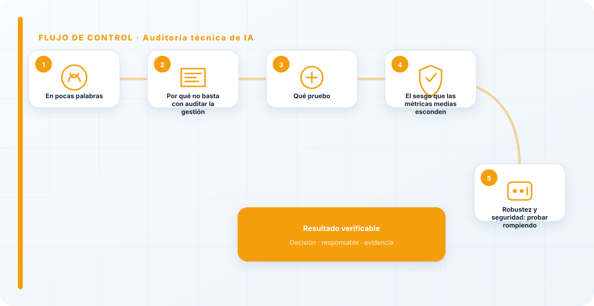
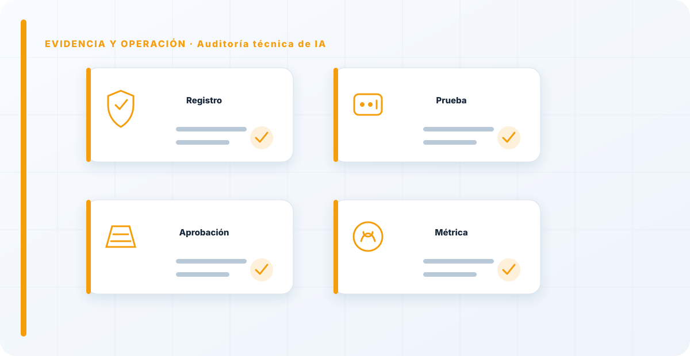

En pocas palabras
La auditoría técnica es donde dejo los documentos y me meto con el sistema. No pregunto si "tienen un proceso para el sesgo"; pruebo el modelo con casos reales y miro si discrimina. La auditoría de gestión te dice si la organización tiene el sistema montado; la técnica te dice si ese sistema, en la práctica, hace lo que debe. Las dos hacen falta y se complementan: un SGIA perfecto sobre un modelo que falla no vale nada, y un modelo impecable sin gobierno detrás tampoco se sostiene. Quien solo hace una de las dos está auditando la mitad de la realidad y firmando sobre la otra mitad a ciegas.
Por qué no basta con auditar la gestión
La auditoría de gestión mira procesos, roles, documentación: comprueba que existe un sistema para hacer las cosas bien. Pero un sistema puede existir sobre el papel y producir, aun así, un modelo que se equivoca donde importa. El proceso puede decir "evaluamos el sesgo" y la evaluación haberse hecho mal, o con datos que no representaban el problema real. El papel describe la intención; solo probar el sistema revela el comportamiento.
Por eso, cuando el riesgo es serio —un modelo que afecta a personas, que toma o influye decisiones con consecuencias—, no me conformo con auditar que existe el proceso: audito el resultado del proceso. Es la diferencia entre certificar que una fábrica de coches tiene un buen procedimiento de frenos y conducir el coche para comprobar que frena. Lo segundo es incómodo y cuesta más, y es justo lo que separa una auditoría que protege de una que tranquiliza.
Qué pruebo
Bajo al sistema y lo examino en varias dimensiones que el papel nunca revela por sí solo:
El rendimiento real: ¿acierta lo que dice acertar, medido con datos reales y no solo con los del laboratorio donde todo sale redondo? La equidad: ¿trata igual a grupos que debería tratar igual, o discrimina de una forma que las métricas medias esconden? La robustez: ¿aguanta entradas raras, incompletas o maliciosas, o se rompe en cuanto se sale de lo previsto? Y la seguridad: ¿resiste una inyección, filtra datos, se le puede sacar información que no debería salir?
Ninguna de estas cuatro se ve leyendo documentación. Todas requieren tocar el sistema, diseñar pruebas y mirar los resultados con ojo crítico. Y todas tienen en común que el problema suele estar en los bordes: en el caso raro, en el grupo minoritario, en la entrada que nadie previó, no en el caso central que todo el mundo probó antes de desplegar.

El sesgo que las métricas medias esconden
De todas las dimensiones, la del sesgo es la que más cuidado exige, porque es la que más fácilmente pasa desapercibida. Un modelo puede tener una precisión global excelente y estar discriminando gravemente a un grupo concreto, porque la media alta de los casos mayoritarios tapa el mal comportamiento con los minoritarios. Si solo miras el número global, ves un modelo estupendo; si desglosas por grupos, ves el problema.
Por eso, cuando audito equidad, no me quedo en la métrica agregada: la parto por los grupos relevantes y comparo. Ahí es donde aparecen los sesgos que a nadie le gusta encontrar y que, sin embargo, son los que tienen consecuencias legales y humanas reales. Un modelo que discrimina no suele hacerlo de forma escandalosa y visible; lo hace en silencio, en un subconjunto, detrás de una media que parece buena.
Robustez y seguridad: probar rompiendo
La robustez y la seguridad se auditan mejor de una forma concreta: intentando romper el sistema en un entorno controlado. Aquí la auditoría técnica se da la mano con el red teaming. Meto entradas mal formadas, casos extremos, intentos de manipulación, y miro cómo responde. Un sistema que solo se ha probado con entradas "buenas" es un sistema del que no sabes nada sobre cómo se comporta cuando las cosas se tuercen, y las cosas siempre se tuercen.
No se trata de un ataque real ni de causar daño; se trata de comprobar, con permiso y en un entorno seguro, dónde están los límites del sistema antes de que los encuentre alguien con malas intenciones. Un modelo que aguanta lo que le echas en la prueba es un modelo en el que puedes confiar un poco más; uno que se rompe a la primera entrada rara te está avisando de por dónde va a venir el incidente.
Cuándo la hago y con qué alcance
La auditoría técnica no es solo para el final; la sitúo en varios momentos. Antes de desplegar, como parte de la validación, para no soltar a producción algo que no ha demostrado que aguanta. Y de forma periódica sobre lo que ya está en producción, porque —como los modelos se degradan solos— un sistema que pasó la prueba hace un año puede estar fallando hoy sin que nadie lo note. Auditar técnicamente una sola vez, al principio, es asumir que el sistema no cambia, y los sistemas de IA cambian solos con el tiempo.
El alcance lo marca el riesgo, no las ganas. En un sistema de alto riesgo que afecta a personas, la auditoría técnica es profunda y recurrente; en uno de riesgo mínimo, basta con lo esencial. Gastar el mismo esfuerzo en todo es desperdiciarlo donde no hace falta y quedarse corto donde de verdad importa. La proporcionalidad es parte del criterio del auditor.
Con evidencia reproducible
Una auditoría técnica solo vale si es reproducible. No me sirve "lo probamos y va bien"; me sirve el conjunto de pruebas documentado, con sus datos, sus casos y sus resultados, de forma que otro auditor pudiera repetirlo y obtener lo mismo. La reproducibilidad es lo que separa una auditoría técnica de una impresión personal, y lo que hace que un hallazgo se sostenga si alguien lo cuestiona meses después.
Esto conecta con la recogida de evidencias: cada prueba que hago genera una evidencia técnica, que es la más sólida de todas porque los números no tienen intenciones ni memoria selectiva. Documentar bien esas pruebas es lo que convierte una tarde tocando el modelo en un hallazgo defendible.
El límite honesto: no se puede probar todo
Una auditoría técnica honesta reconoce sus propios límites, y esto es más importante de lo que parece. No se puede probar exhaustivamente un modelo: el espacio de entradas posibles es prácticamente infinito, y por mucho que pruebe, siempre habrá casos que no he cubierto. Fingir que una auditoría técnica garantiza que el modelo es correcto en todos los casos es deshonesto y peligroso, porque genera una confianza que no se corresponde con lo que realmente se comprobó.
Lo que hago en su lugar es muestrear con criterio: elijo los casos que más importan —los de mayor riesgo, los grupos vulnerables, los escenarios límite— y documento explícitamente qué probé y qué no. Ese "qué no" es tan importante como el "qué sí", porque le dice a la organización dónde queda incertidumbre residual y, por tanto, dónde conviene mantener supervisión humana o pruebas adicionales. Una auditoría que dice "probé esto, con estos resultados, y esto otro queda fuera de alcance" es infinitamente más útil y más honesta que una que insinúa haberlo comprobado todo.
Esta humildad tiene una consecuencia práctica: la auditoría técnica no sustituye a la monitorización continua, la complementa. Yo pruebo a fondo en un momento dado; la monitorización vigila el resto del tiempo. Vender una auditoría técnica como un certificado de que el modelo nunca fallará es el tipo de promesa que acaba en un incidente y en un "pero si lo habíais auditado". Lo que audito es que, en lo que probé y con el rigor con que lo probé, el sistema se comporta como debe; ni más, ni menos.
Auditar solo la gestión y no la técnica es como certificar que un coche tiene un buen proceso de fabricación sin haberlo conducido nunca. El papel te dice que hubo intención; solo probar el sistema te dice si la intención se materializó. Cuando alguien me enseña un SGIA precioso pero no me deja probar el modelo, es justo cuando más me preocupo, porque suele significar que hay algo debajo que preferirían que no viera.
Los errores que veo una y otra vez
- Auditar solo la gestión y no tocar nunca el sistema.
- Probar con datos de laboratorio y no con datos reales.
- Mirar la métrica global y no desglosar el sesgo por grupos.
- No probar robustez ni seguridad con casos extremos.
- Auditar una sola vez y no de forma periódica sobre producción.
- Pruebas no reproducibles, imposibles de verificar o defender.
- Gastar el mismo esfuerzo en todo en vez de según el riesgo.

Cómo lo llevaría a un entorno real
Cuando aterrizo auditoría técnica de ia en una organización, no empiezo por comprar una herramienta ni por redactar veinte páginas. Empiezo por dibujar qué ocurre hoy: quién solicita el cambio, quién lo aprueba, qué sistemas intervienen, qué datos cruzan el proceso y quién se entera cuando algo falla. Ese dibujo suele descubrir más problemas que cualquier checklist. En auditoría de IA, lo peligroso no es solo carecer de controles; también lo es creer que existen porque alguien los escribió una vez.
Después separo lo imprescindible de lo deseable. Lo imprescindible debe poder comprobarse: un responsable identificado, una regla clara, una evidencia fechada y un mecanismo para reaccionar. En este caso revisaría especialmente auditoría, criterio y muestra. No me vale una respuesta del tipo «lo gestiona el proveedor» o «eso lo mira seguridad». Necesito saber qué persona toma la decisión, con qué información y dentro de qué plazo.
La implantación debe crecer con el riesgo. Un piloto interno puede funcionar con una ficha breve y una revisión manual. Un sistema que afecta a clientes, empleados, dinero o información sensible necesita segregación de funciones, pruebas independientes, monitorización y un expediente mantenido. Mi criterio es sencillo: cuanto más difícil sea deshacer el daño, más fuerte debe ser la barrera antes de producción.
Decisiones que deben quedar por escrito
Hay decisiones que no deberían vivir en una reunión ni en un mensaje de chat. Para auditoría técnica de ia dejaría documentados el alcance, los supuestos, los límites de uso, las excepciones aceptadas y las condiciones que obligan a detener o reevaluar. El documento no tiene que ser enorme, pero sí debe permitir que otra persona entienda por qué se hizo lo que se hizo.
También registraría quién puede cambiar evidencia, quién valida hallazgo y quién recibe las alertas relacionadas con acción correctiva. Cuando esas tres responsabilidades se mezclan, aparece el clásico problema: el mismo equipo construye, aprueba y declara que todo funciona. No siempre se puede separar por completo, sobre todo en organizaciones pequeñas, pero al menos debe existir una revisión por alguien que no dependa del éxito inmediato del despliegue.
Las excepciones merecen un tratamiento propio. Una excepción sin fecha de caducidad acaba convirtiéndose en la arquitectura real. Por eso exigiría motivo, riesgo aceptado, responsable, compensaciones, fecha de revisión y criterio de cierre. Si falta uno de esos elementos, no es una excepción gestionada; es una deuda invisible.
Un ejemplo práctico
Imaginemos que un equipo quiere incorporar auditoría técnica de ia a un servicio que ya está en producción. La propuesta promete reducir tiempos y automatizar tareas, pero utiliza componentes que cambian con frecuencia. Antes de aprobarlo, pediría una prueba limitada, un inventario de dependencias, un flujo de datos y una definición clara de qué acciones quedan fuera del alcance.
Durante la prueba recogería resultados normales y casos límite. No solo miraría si funciona; comprobaría qué ocurre cuando faltan datos, cambia una versión, se pierde conectividad, llega una entrada manipulada o un usuario intenta superar sus permisos. Ahí es donde se ve si el diseño aguanta. En muchas pruebas felices todo parece seguro porque nadie ha intentado romper la hipótesis de partida.
Si los resultados son aceptables, la salida a producción tendría condiciones: versión fijada, configuración aprobada, logs disponibles, responsables de guardia, procedimiento de rollback y revisión tras las primeras semanas. Si alguno de esos elementos no existe, prefiero retrasar el despliegue. Un día de demora suele ser más barato que investigar después un comportamiento que nadie puede reconstruir.
Qué evidencias guardaría
Para demostrar que el control funciona conservaría evidencias que cuenten una historia completa, no capturas sueltas. La historia debe enlazar necesidad, decisión, implementación, prueba y operación. En auditoría técnica de ia eso incluye como mínimo la ficha del activo, el diagrama vigente, la configuración aprobada, el resultado de las pruebas y el registro de cambios.
No guardaría información por acumular. Si los logs contienen prompts, documentos, datos personales o secretos, aplicaría minimización, control de acceso y retención. La evidencia debe ayudar a investigar y auditar sin crear una segunda fuga de información. Es frecuente endurecer el sistema principal y dejar un repositorio de evidencias abierto a demasiadas personas.
- Propietario y finalidad de auditoría técnica de ia, con fecha de revisión.
- Inventario de auditoría, criterio y dependencias asociadas.
- Criterios de aceptación y resultados sobre muestra y evidencia.
- Configuración efectiva, versión y aprobación del cambio.
- Alertas, incidentes, excepciones y acciones correctivas cerradas.
Señales de que el control no está funcionando
El primer síntoma es que nadie sabe responder con rapidez quién es el responsable. El segundo es que la documentación describe una versión distinta de la que está operando. El tercero es que las alertas existen, pero llegan a un buzón que nadie revisa. Cuando aparecen esos tres síntomas, el problema no es tecnológico: el control se ha desconectado de la operación.
También desconfío de las métricas demasiado perfectas. Cero incidentes, cero excepciones y cien por cien de cumplimiento pueden significar excelencia, pero con frecuencia significan que no estamos mirando. Prefiero indicadores que enseñen tendencia: tiempo de corrección, antigüedad de excepciones, cobertura de pruebas, cambios sin revisión y reincidencias.
Por último, revisaría el comportamiento después de cada cambio significativo. En IA, una actualización de modelo, dataset, prompt, herramienta, permiso o proveedor puede alterar el riesgo sin cambiar el nombre del servicio. Si el proceso solo reevalúa cuando se crea un proyecto nuevo, se quedará ciego durante la mayor parte de la vida útil.
Mi criterio de cierre
Considero que auditoría técnica de ia está razonablemente controlado cuando el equipo puede explicar el proceso sin depender de una sola persona, reconstruir una decisión con evidencias y detener el servicio sin improvisar. No busco perfección documental; busco que la organización pueda tomar decisiones repetibles bajo presión.
El cierre no consiste en marcar todas las casillas. Consiste en demostrar que los riesgos relevantes tienen propietario, que los controles se prueban y que las desviaciones producen una acción. Si la evidencia no cambia ninguna decisión, probablemente estamos generando burocracia. Si una decisión importante no deja evidencia, estamos creando fragilidad.
Este enfoque es el que intento mantener en toda CyberLibrary AI: explicar el control de forma que lo entienda negocio, pero con suficiente profundidad para que arquitectura, seguridad, auditoría y operaciones puedan aplicarlo de verdad.
Referencias y marcos relacionados
Contenido educativo y técnico. No sustituye asesoramiento jurídico ni una auditoría formal.